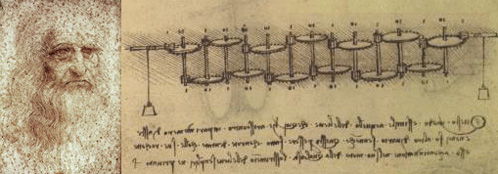

Wahrscheinlich hat Leonardo Da Vinci das erste mechanische Rechengerät erfunden. Eine Rekonstruktion dieses Geräts hat gezeigt, dass es funktioniert. Bevor Da Vinci an seinem "Letzten Abendmahl" zu arbeiten begann, entwarf er einen humanoiden Roboter, einen Soldaten. Der Roboter konnte seine Arme drehen, den Kopf mit Hilfe eines flexiblen Nackens bewegen, und seinen Mund öffnen und schließen. Vermutlich gab er wilde Geräusche von sich, durch automatisierte Trommelschläge. Gekleidet ist der Krieger in eine Kriegs-Rüstung des späten 15. Jahrhunderts. Dieser Roboter beeinflusste immer wieder Leonardos anatomische Studien.